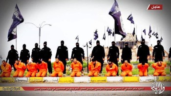

Estado Islámico y Boko Haram sí son legado de Mahoma
Los hechos de profunda barbarie que han protagonizado el autodenominado Estado Islámico (EI o también ISIS), así como el nigeriano Boko Haram han llevado a muchos musulmanes y otros religiosos a decir que las acciones de este grupo no son islámicas, ni representan al “verdadero islam”.
Por ejemplo, Ahmad Tayer, imán de la mezquita de Bogotá, dijo para Noticias UNO que “No se acepta dentro del marco del islam, para nada en el mundo, el recurso a la violencia como un lenguaje para expresar algo” .Y sobre quienes cometieron los atentados a Charlie Hebdo, “No representan al islam”, afirmó.
¿Qué tan ciertas son estas declaraciones? ¿Son las acciones de los yihadistas, como EI y Boko Haram, fruto de la religión y especialmente del islam?
Antes de empezar a analizar este tema se debe hacer una distinción fundamental. Se analizará aquí si el islam defiende la violencia, no si todos los musulmanes son violentos o son se harán terroristas. Se analiza la doctrina en si. Es importante distinguir entre criticar la idea y criticar a las personas. Es un hecho que la inmensa mayoría de los musulmanes no son terroristas y anhelan vivir en paz. Este análisis irá a las raíces del islam, a sus textos sagrados. De hecho existe una visión edulcorada del islam, así como hoy hay una visión edulcorada del cristianismo que no avala la esclavitud y fomenta la igualdad entre sexos, a pesar que la Biblia avala la esclavitud y la inferioridad de la mujer. Algo similar pasa con el islam y la instrumentalización de la violencia para imponerse como credo y forma de organización política.
Algún lector podrá preguntarse para que sirve preguntarse si el islam —como doctrina— defiende la violencia, si la mayor parte de los musulmanes son pacíficos. O si con el hacer esta crítica no estamos fomentando prejuicios negativos hacía inmigrantes musulmanes. La respuesta es que el problema, el veneno, está en considerar un libro como sagrado e incuestionable. En este caso el Corán. El problema esta en la fe religiosa. Los musulmanes moderados y pacíficos son como arbustos finamente podados por la cultura de los derechos humanos. Pero pasa, que en algún momento esas tijeras de la civilización no actúan. Es cuando la fe es muy fuerte. Entonces lo que crece es muy violento y tendrá como sustento el Corán y la tradición y los dichos del profeta.
Para responder si el islam es en si violento, machista, homófobo e intolerante hay que revisar los orígenes del islam. Mahoma fue un predicador del siglo VII muy diferente al de otras religiones monoteístas. La propuesta religiosa de Mahoma es también una propuesta política y es expansionista. Este par de características impusieron al islam una marca que explica mucho del actuar de los grupos yihadistas.
Cuando Mahoma inició sus prédicas en La Meca, cuando aún no tenía poder e influencia. En estos primeros días Mahoma se mostraba sólo como un predicador. Pero la situación cambió ya en Medina. Cuando Mahoma contó con poder político su tonó cambió. Como dice el historiador Muir:
A partir de que Mahoma llega a Medina puede observarse una clara y rápida declinación del sistema que él había inculcado. La intolerancia reemplazó a la libertad; la fuerza, a la persuasión. Las armas espirituales, empleadas en un principio para elevador objetivos, pasaron a servir a los propósitos de la autoridad temporal, al mismo tiempo que se usaba la autoridad temporal para incrementar el poder de esas armas espirituales. El nombre del Todopoderoso otorgaba un terrible poder a la espada del Estado, y la espada del Estado devolvía una pingüe ganancia al destruir a los “enemigos de Dios” y ofrecedlos en sacrificio en el altar de la nueva religión. “Matad a los no creyentes donde quieras que los encontreís” ese era ahora el lema del islamismo. “Luchad para la gloria de Dios hasta aplastar toda oposición y que no haya más religión que la del Señor”
Si revisamos los hechos de Estado Islámico y Boko Haram de seguro estos serían aprobados por el profeta Mahoma.
1. Venta de niñas como esposas

Niñas yazidíes destrozadas por la acción de Estado Islámico.
El EI ha vendido como esclavas a niñas de familias cristianas y yazidíes. Los niños de minorías capturados “han sido vendidos en el mercado con etiquetas con precios, han sido vendidos como esclavos”, dijo Renato Winter, comisionado de la ONU en Iraq en febrero de 2015 a la BBC.
El grupo nigeriano Boko Haram tomó en abril de 2014 una escuela y se llevó a 223 niñas. Para ellos había una doble falta: eran mujeres educándose, mientras debían estarse preparando para ser amas de casa, y además estaban educándose de manera occidental. Muchas de las niñas fueron vendidas como esclavas.
“Yo secuestré a vuestras hijas y voy a venderlas en el mercado, en el nombre de Dios”. Afirmó Aboubakar Shekau, líder de Boko Haram. Posteriormente fueron vendidas, cada una por doce dólares como esposas.
Las niñas han sido tomadas como esclavas sexuales por parte de los militantes del islam. Muchas de las niñas en Nigeria, como en Siria han reportado haber sido abusadas sexualmente. Pero esta práctica horrorosa fue avalada por el profeta bellaco, tal como se puede leer en Sura 33:49-51:
¡Profeta! Hemos declarado lícitas para ti a tus esposas, a las que has dado dote, a las esclavas que Dios te ha dado como botín de guerra […] Puedes rechazar de momento a cualquiera de ellas, o llamar a tu lecho a la que quieras, o desear a una de las que antes habías descuidado, y con ello no comentarás falta.
Note que la sura (o versículo) da por hecho que las esclavas tomadas como botín de guerra fueran dadas por Dios. ¿Qué se puede esperar entonces de los hombres que buscan implantar el estado teocrático que el mismo Mahoma inició?
2. Mutilación genital a las niñas
El líder del Estado Islámico, Abu Bakr al Baghdadi, ordenó en enero de 2015, en una fatua (decreto religioso) la mutilación genital de dos millones de niñas iraquíes residentes en la ciudad de Mosul con el objetivo de “distanciarlas del libertinaje y la inmoralidad”.
Esta visión de inferioridad de la la mujer y de ser tomadas como objetos sexuales está claramente especificados en el Corán cuando el profeta machista dijo:.
“Vuestras mujeres son como vuestro campo: acceded a ellas como queráis” (Sura 2.223).
Mohammed Qotb, un escritor musulmán aclara que la mujer no tiene derecho alguno sobre su cuerpo:
“Un guardián no tiene derecho de invitar a la gente que robe algo que no le pertenece. De la misma manera, la mujer que es simplemente la guardiana de su honor no tiene derecho a hacer uso de él [de su órgano sexual] ni puede invitar a nadie a violarlo. Porque no se trata tan sólo de su propio honor sino del honor de sus padres, de su familia, de la sociedad, de la sociedad y de toda la humanidad.”
3. Matanza de infieles: politeístas, yazidies, cristianos, judíos, ateos

Militante de Estado islámico momentos antes de degollar vivo a David Haines, un voluntario humanitario secuestrado en Siria. Para los islamistas no importó el trabajo humanitario de Haines, su condición de infiel fue el principal delito para matarle.
Por su paso el EI ha matado a yazidies, cristianos y musulmanes chiitas. Tales acciones son avaladas por Mahoma, quien recurrió a las matanzas para cimentar su reinado en Medina.
“Mata a los infieles donde los encuentres”. Sura 9:5
“Yo sembraré el terror en los infieles y vosotros cortadles las cabezas”. Sura 8:12
“A los que les hacen la guerra a Alá y a su Profeta mátalos, crucifícalos, córtales las manos y los pies”. Sura 5:37
“Cuando os encontréis con infieles, mátalos y haz con ellos una carnicería”. Sura 47:5
Toda la expansión del islam desde su tierra natal hasta la península Ibérica y la India fue barbara e implicó el derramamiento de sangre. Por poner solo un ejemplo, en la batalla de Somanth, en la India en el año 1025, Mahmud al Ghazni mató a más de 50.000 personas que trataron de defender la ciudad y al templo hinduista. Mahmud consideraba que no solo debía conquistar sino convertir a los indios al islam o destruirlos.
En el Corán los cristianos son llamados “asociadores” por asociar a Jesús con Alá. Para ellos esto es una blasfemia que se ha de rechazar. Contra los judíos Mahoma generó un odio al ser rechazado como profeta por las tribus judías de la península arábiga. El antisemitismo no es algo alejado del islam. Es parte de su nacimiento y su historia tanto en el Corán como en la tradición islámica.
Sobre los escépticos o ateos:
¡Creyentes! No toméis como amigos a vuestros padres y a vuestros hermanos si prefieren la incredulidad a la fe. Quienes de vosotros les consideran amigos, ésos son los impíos. Sura 9: 23
Iglesia destruida tras un atentado terrorista en el norte de Nigeria. “Me contaron que los fieles asesinados en las iglesias atacadas (de Boko Haram) son decenas; hombres, mujeres y niños”, dijo por teléfono un habitante de Shibok, según la agencia de noticias Ansa. Fuente: Arg Noticias
Sobre los cristianos:
Cuando hayan transcurrido los meses sagrados, matad a los asociadores [los cristianos por asociar Jesús con la divinidad] dondequiera que les encontréis. Capturadles! Sitiadles! Tendedles emboscadas por todas partes! Pero si se arrepienten, hacen la azalá y dan el azaque [impuestos], entonces dejadles en paz! Alá es indulgente, misericordioso. Sura 9:5
¡Creyentes! Los asociadores son mera impureza. ¡Que no se acerquen, pues, a la Mezquita Sagrada después de este su año! Si teméis escasez, Alá os enriquecerá por favor Suyo, si quiere. Alá es omnisciente, sabio. Sura 9:28
Sobre los judíos:
“El tiempo (de Resurrección) no vendrá hasta que los musulmanes combatan a los judíos; hasta que los judíos se escondan detrás de rocas y árboles, los cuales clamarán: ‘¡Oh, Musulmán! ¡Hay un judío escondido detrás de mí, ven y mátalo!”
—Sahih Muslim, Libro 041, Número 6985
La yihad, o guerra santa es una ordenanza del profeta. Algunos musulmanes moderados, suavizados ya por los derechos humanos han interpretado la yihad como una lucha interna contra el mal. No obstante, el sentido en el que fue enseñado por Mahoma es claro, la expansión militar del islam: Conversión o muerte.
¡Creyentes! ¿Qué os pasa? ¿Por qué, cuando se os dice: «¡Id a la guerra por la causa de Alá!» permanecéis clavados en tierra? ¿Preferís la vida de acá a la otra? Y ¿qué es el breve disfrute de la vida de acá comparado con la otra, sino bien poco…? Sura 9:38
Si no vais a la guerra, os infligirá un doloroso castigo. Hará que otro pueblo os sustituya, sin que podáis causarle ningún daño. Alá es omnipotente. Sura 9:39
¡Id a la guerra, tanto si os es fácil como si os es difícil! ¡Luchad por Alá con vuestra hacienda y vuestras personas! Es mejor para vosotros. Si supierais… Sura 9:41
“Quienes creen en Alá y en el último Día no te piden dispensa cuando de luchar con su hacienda y sus personas se trata. Alá conoce bien a quienes Le temen”. Sura 9:44
“Alá ha comprado a los creyentes sus personas y su hacienda, ofreciédoles, a cambio, el Jardín. Combaten por Alá: matan o les matan. Es una promesa que Le obliga, verdad, contenida en la Tora. en el Evangelio y en el Corán. Y ¿quién respeta mejor su alianza que Alá? ¡Regocijaos por el trato que habéis cerrado con Él! ¡Ése es el éxito grandioso!” Sura 9:111
¡Creyentes! ¡Combatid contra los infieles que tengáis cerca! ¡Que os encuentren duros! ¡Sabed que Alá está con los que Le temen! Sura 9:123
Bujari V1B2N25: “Se le preguntó Apóstol de Alá,´ ¿Cuál es la mejor obra? Él respondió: “Creer en Alá y Su Apóstol Muhammad”. Después le preguntaron “¿Cuál es la siguiente [obra] mejor en bondad? Él respondió: “Participar en el Yihad, la lucha religiosa en la Causa de Alá”
El Estado Islámico y su más reciente socio el extremista Boko Haram de Nigeria, no están lejos de lo que enseñó el profeta Mahoma. ¡Al contrario! Están siendo fieles guardianes de las enseñanzas y el sentido original del Islam. Los fundamentalistas saldrán una y otra vez mientras exista el islam. Mientras hayan personas que consideren que el Corán es la palabra de Dios y que Mahoma es su profeta los yihadistas surgirán como frutos obvios de esta fe sanguinaria.
El columnista colombiano comentaba así sobre la barbarie de Estado Islámico:
“Ese profeta [Mahoma] no es más que la ya manida estrategia argumentativa del desprecio, bautizada con el nombre de un Dios siempre acorde a la sed progresiva de la sangre…. ISIS [Estado Islámico] logra avanzar con sus shows mediáticos de venganza sagrada, convocando a los decepcionados y relegados del mundo a vincularse a un ejército que ha renacido de los focos últimos del tiempo. La posmodernidad, con su eclecticismo de sentidos múltiples y fracasados lo propicia.”

Piloto jordano Muad al Kasaesbe quemado vivo por Estado Islámico. Gran parte de la crítica dada por muchos clérigos musulmanes se dio por el tipo de ejecución (quemado vivo) y por el hecho que el torturado también era musulmán. ¿La queja no debería ser simplemente porque era un humano?
La atea y ex-musulmana Taslima Nasrin lo dejaba claro:
“No encuentro ninguna diferencia entre el Islam y los fundamentalistas islámicos. Creo que la religión es la raíz, y de la raíz crece el fundamentalismo como un vástago venenoso. Si suprimimos el fundamentalismo y mantenemos la religión, entonces un día u otro el fundamentalismo volverá a crecer. Necesito decir esto porque algunos liberales defienden siempre el Islam y culpan a los fundamentalistas de los problemas. Pero el Islam en sí mismo oprime a las mujeres. El Islam en sí mismo impide la democracia y viola los derechos humanos”
Bien le vendría a muchos posmodernistas que defienden el islam como religión de paz, y otros amigos políticos leerse la Sura 9 y reflexionar, con un libro de la historia del islam en la mano, si es posible que esta religión sea en verdad una religión de paz.
4. Homofobia extrema

Militantes de Estado islámico decapitando a tres hombres culpados de ser homosexuales en el norte de Iraq. Marzo de 2015
El Estado Islámico ha arrojado a homosexuales desde edificios, lapidado y decapitado a homosexuales u hombres acusados de serlo.
Esta atrocidad no es exclusiva de EI, sus enemigos más cercanos, los chiitas también los ahorcan en Irán y sus iniciales patrocinadores, el rico y nunca cuestionado surtidor petrolero de Arabia Saudita les impone la pena de muerte. Las naciones que imponen actualmente la pena de muerte sobre los gays y lesbianas son musulmanes.
El Corán retoma la leyenda de la destrucción de Sodoma y Gomorra para alimentar su homofobia:
“Y a Lot. Cuando dijo a su pueblo: “¿Cometéis una indecencia que ninguna criatura ha cometido antes? Ciertamente, por concupiscencia, os llegáis a los hombres en lugar de llegaros a las mujeres. ¡Sí, sois un pueblo inmoderado!”. Lo único que respondió su pueblo fue: “¡Expulsadles de la ciudad! ¡Son gente que se las da de puros!”. Y les salvamos, a él y a su familia, salvo a su mujer, que fue de los que se rezagaron. E hicimos llover sobre ellos una lluvia: ¡Y mira cómo terminaron los pecadores!” Sura 7:80-84
5. Ausencia de laicismo
El islam es una doctrina religiosa pero también política. En su concepción, Mahoma vio en la ley islámica la manera de organizar la sociedad. La concepción del Estado en el islam es el de una teocracia. Para poner las cosas más complejas, cuando murió Mahoma, el islam se dividió entre chiitas y sunitas Un grupo odia al otro y muchas matanzas se han cometido en nombre del “verdadero islam” . Detrás de todos los radicales chiitas está Irán. Detrás de los radicales sunitas está Arabia Saudita, en especial con la red Al Qaeda.
No se podría decir a que bando, chiita o sunita, se uniría Mahoma de estar vivo. Pero lo que si es seguro es que avalaría sin duda el estado teocrático y se opondría a la democracia. Tanto el bastión del chiismo, Irán, como el del sunismo, Arabia Saudita, reprimen los derechos humanos y la política separada de la religión son impensables.Se trata de dos cabezas del mismo monstruo
Ariel Segal, internacionalista afirmó en Perú21 que los bandos sunitas y chiitas son irreconciliables, y que cada uno busca la hegemonía:
“Irán y Al Qaeda son enemigos, pero son expansionistas y cada uno quiere formar un Imperio: Irán uno chiita, Al Qaeda uno sunita”.
5. Desprecio por la ciencia y la cultura

En octubre de 2014 el Estado Islámico prohibió en Iraq que se enseñara o hablara sobre la teoría de la evolución de Darwin (para ellos es solo cosa de Darwin, ¡como si la genética fuese solo de Mendel!). Ya en agosto había prohibido la enseñanza de la filosofía, la química, la física y la música y la historia, en la ciudad de Raqa en Siria.
Según informó el Observatorio Sirio de Derechos Humanos, el EI había convocado a varios directores de colegios de Raqa a una reunión para “preparar un sistema islámico de enseñanza en las escuelas de la ciudad de Raqa y alrededores”. Los yihadistas exigieron que el plan de estudios sea acorde con el islam, revisarlo por especialistas de una “junta educativa” que formará el Estado Islámico, mientras eliminaban la filosofía y todo lo que mencionasen “leyes de la naturaleza”.
El diario Middle East Online afirmó que en la zona de influencia de Estado Islámico:
“Se han eliminado del temario las asignaturas de Historia y Filosofía, algo que ya se había anunciado en el mes de agosto, pero también las de Geografía, Historia y Música. Los poemas y canciones patrióticas han sido eliminadas y prohibidas totalmente en las aulas, según informa el medio. Se ha prohibido la enseñanza de determinadas leyes de física y química, porque “las únicas leyes son las leyes de Dios”
En otras palabras no hay leyes de los gases ni de la herencia porque todo es voluntad de Alá y él decide que hacer con su creación. Textualmente los militantes de Estado Islámico, muchos llegados de países occidentales sustentaron la negativa a la enseñanza de le evolución porque “toda la creación se debe a Dios el Altísimo”.

Escuela atacada pro Boko Haram en Maiduguri, Nigeria. Cinco escuelas habían sido atacadas tan solo a marzo de 2014. El nombre de la organización “La educación occidental es pecado” ha tomado como blanco el ataque a la literatura, historia y ciencia, mientras abogan por una enseñanza y política que gire solo en torno del Corán. (Imagen: AFP/Getty Images)
Los yihadistas consideran completamente adversa la biología evolutiva. El mundo natural, sin la la prevista llegada del ser humano como parte de un plan determinado les repugna.
“Aquellos que recuerdan a Allah, de pie, sentados, y cuando se acuesten, y meditan sobre la creación de los cielos y de la tierra: “¡Oh, Sustentador nuestro! No creaste (nada de) esto sin un significado y un propósito. ¡Infinita es Tu gloria! Presérvanos del castigo del fuego.” Sura 3:191
“Y Él es quien ha hecho que caiga agua del cielo y hemos hecho surgir a todas las cosas vivas: y mediante ella hemos hecho brotar la vegetación, de la que hacemos salir espigas granadas; y de la espata de la palmera, dátiles arracimados; y huertos de vides, y el olivo, y el granado: ¡(todos ellos) tan parecidos y sin embargo tan distintos! ¡Observad su fruto cuando fructifica y madura! ¡En verdad, en todo esto hay ciertamente mensajes para una gente dispuesta a creer!” Sura 6: 99
Los milicianos del grupo yihadista han arrasado partes de la localidad del norte de Irak, con 3.000 años de antigüedad. Los restos de la cultura asiria fueron arrasados con bulldozers y a martillazos.
El nombre del grupo radical nigeriano se traduce como “La educación occidental es pecado”. Lo que sin duda arroja luces sobre la opinión de estos devotos creyentes del Corán. Este grupo raptó 223 niñas de una escuela en abril de 2014, luego perpetró un ataque suicida en una escuela en noviembre, el pasado 26 de marzo de 2015 secuestró 500 estudiantes de una escuela. Todo por estarse pervirtiendo con educación occidental.
A lo anterior hay que añadir la destrucción del patrimonio cultural de las antiguas culturas asirias y babilonias bajo la excusa de ser ídolos.
Conclusión
Si hablamos del islam como religión y basándonos en sus texto sagrado, así como con el ejemplo de Mahoma, se puede concluir que este sistema religioso si es violento, intolerante, machista, homófobo y contrario a las enseñanzas que contradigan sus credos. Lo cual no es lo mismo que afirmar que todos los musulmanes cumplen estas características. La no violencia de la mayoría de los musulmanes se debe a que ignoran estos mandatos de intolerancia que si están expresamente consignados como aquí se reportan. Pero, el hecho que se promueva el Corán como palabra de dios y se alegue que Mahoma es profeta de esa deidad permitirá que siempre, en algún lugar y en cualquier momento surja un fundamentalista, que por deseo de defender la presunta verdad revelada termine haciendo las cosas que hoy Bopko Haram y estado Islámico hacen.
Lo mejor sin duda sería un razonamiento crítico que sin duda aleja de las ideas religiosas.
Volver a la sección Examinando las religiones
Comentarios
Comments powered by Disqus